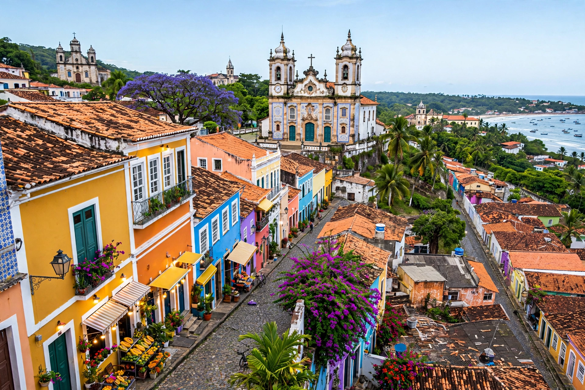

| Pernambuco | |
 | |
| Country | Brazil |
|---|---|
| Capital | Recife |
| Area | 98,068 km² |
| Population | about 9.1 million |
| Region | Northeast |
Pernambuco is a state in northeastern Brazil, on the Atlantic coast, bordered by Paraíba and Ceará to the northwest, Alagoas and Bahia to the south, and Piauí to the west. Its capital is Recife, and it includes the archipelago of Fernando de Noronha.
One of the first Portuguese captaincies (1534), Pernambuco became the richest sugar-producing region of the colonial world. The Dutch occupied it from 1630 to 1654, building Recife under Governor Johan Maurits of Nassau. Pernambuco was the scene of several revolts against Portuguese rule, including the Mascates War, the Pernambucan Revolt of 1817, and the Praieira Revolt of 1848.
The state is the birthplace of frevo and maracatu, the music and dance traditions at the heart of Recife's and Olinda's carnivals. The historic centre of Olinda is a UNESCO World Heritage Site. The interior, the sertão, is associated with the poet and bandit lore of Lampião and with Luiz Gonzaga, the "king of baião".
Sugarcane, fruit growing in the irrigated São Francisco valley around Petrolina, textiles, and the port-industrial complex of Suape anchor the economy; Recife is a growing technology hub (Porto Digital).